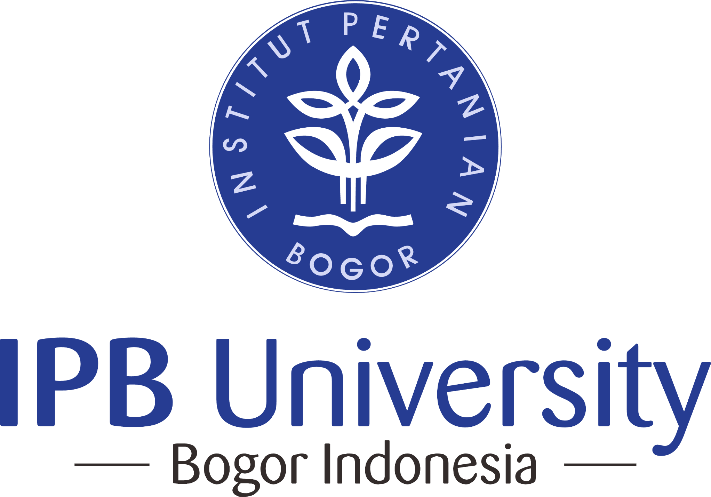

BACHELOR OF FORESTRY · AUG 2022—AUG 2026
IPB University
Forest Resource Conservation and Ecotourism
3.46/ 4.00 GPA
Undergraduate thesis: Relationship Between Landscape Fragmentation, Surface Moisture, and Land Surface Temperature in the Giam Siak Kecil–Bukit Batu Biosphere Reserve.
Visit IPB University ↗